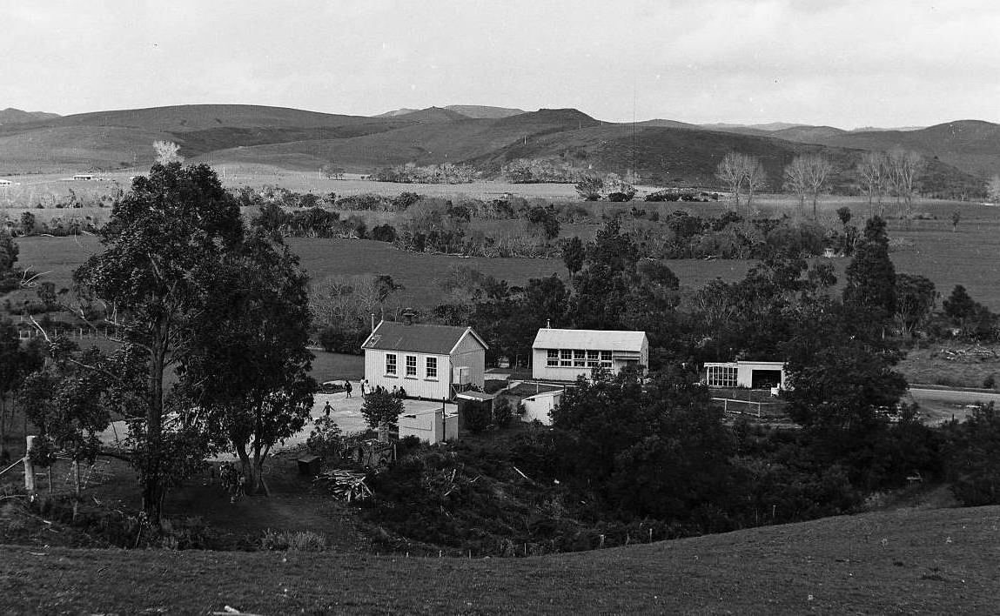

THIS book is about my attempts to understand children, especially their ability and desire to express themselves in their own natural ways. My attempts began with crafts, and these drew my attention to the individual idiom of each child in art, in music, in movement, in drama, and ultimately in language.
After a time Eunice Foster came and worked with me for two years. She helped especially with the development of art and crafts in the infant room, and then with drama and writing. Her children did outstanding work with fabric and lino printing. Later Cherry Raymond came, and in her time we learned to understand much about the individual idiom that each child can develop in language when encouraged.
In this work the children themselves made many discoveries of technique and of appreciation. We learned from them as we went along. Comparatively little professional writing on creative education came my way during these years, and I began with only sketchy educational beliefs; but I now realise that what I have learned from my children and recorded here supports some well established educational beliefs. For what I myself learned during these years I have mainly my children to thank. They were my teachers as I was theirs, and the basis of our relationship was sincerity, without which, I am convinced, there can be no creative education.
ELWYN S. RICHARDSON
Auckland
September 1964

Oruaiti School